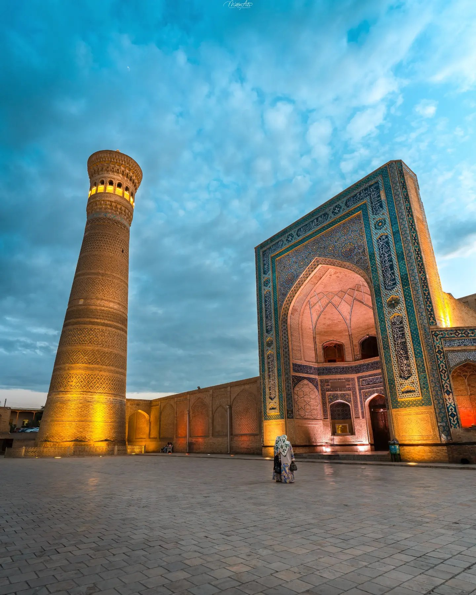
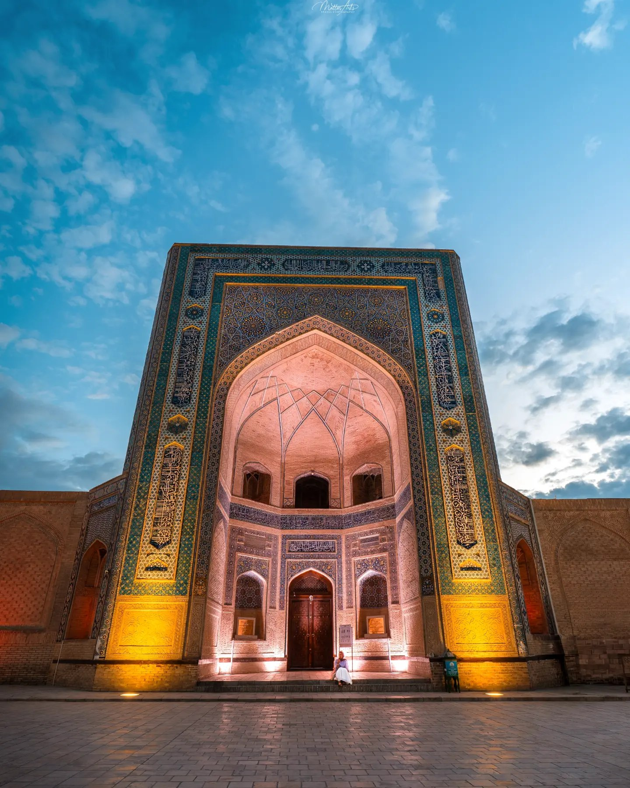
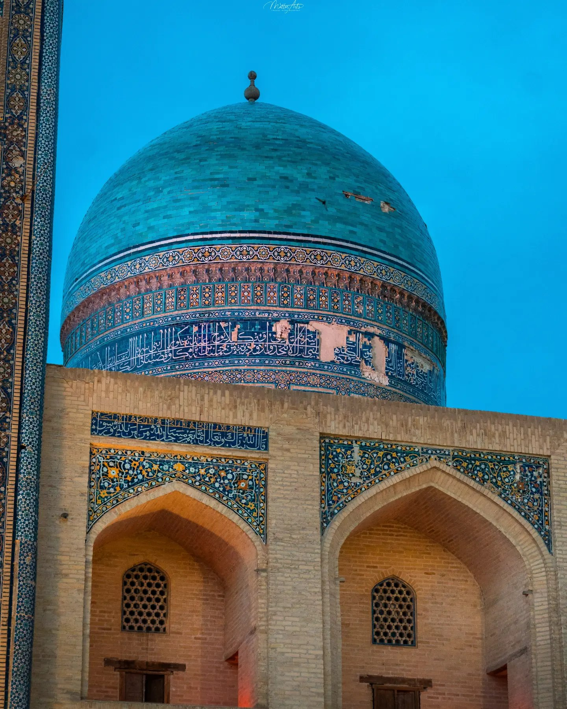
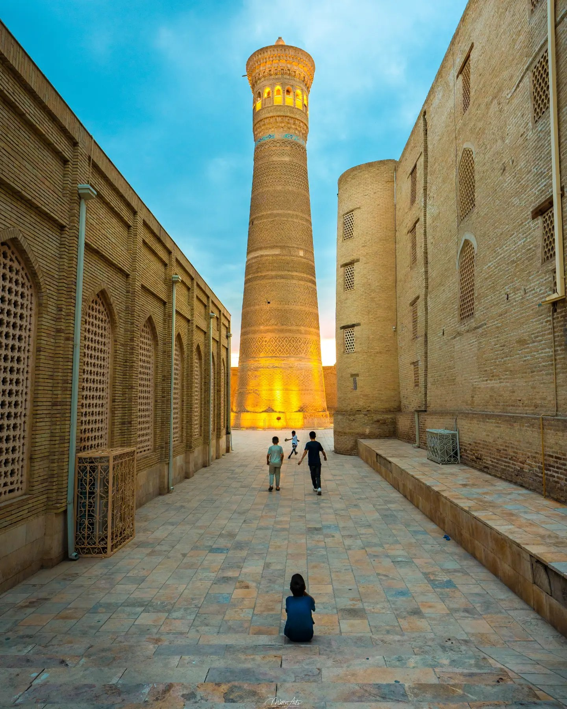

Bukhara
Bukhara, Uzbekistan · April 12, 2024





The Kalyan Minaret at dusk, and the old city's mosques and courtyards.
Bukhara, Uzbekistan · April 12, 2024




The Kalyan Minaret at dusk, and the old city's mosques and courtyards.